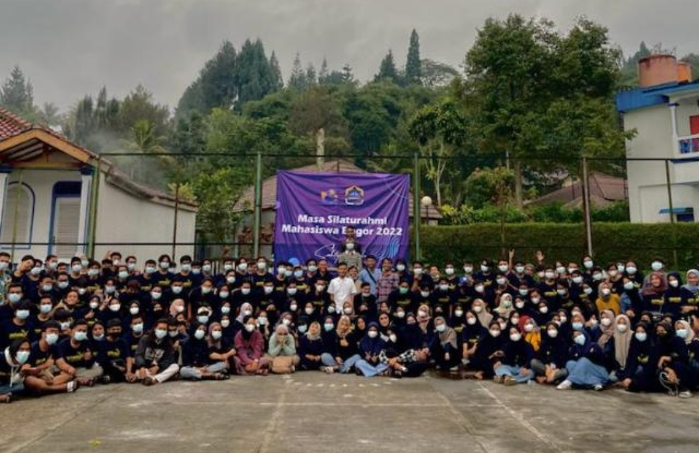

<!DOCTYPE html>
<html lang="en"></html>
<html>
    <head>
    <meta charset="UTF-8">
    <meta http-equiv="X-UA-Compatible" content="IE=edge">
    <meta name="viewport" content="width=device-width, initial-scale=1.0">
    <title>IKMABO NGODING</title>
    <link rel="stylesheet" href="css/style.css">
    </head>
<body>
        <!--h1 sampai h6 untuk ukuran font-->
        <div class="judul">
            
            <H1 >IKATAN MAHASISWA BOGOR-BR</H1>
            
        </div>
    
    <p>
        Sekilas Tentang Ikmabo. 
logoikmabo2.jpgIkatan Mahasiswa Bogor (Ikmabo) adalah suatu organisasi yang berdiri resmi sejak tahun 1990.
Ide dan gagasan pembentukan organisasi Ikmabo telah ada sebelum tahun 1990 yang dirintis oleh 
sekelompok mahasiswa asal Bogor bernama Corp Ikatan Mahasiswa Bogor (CIMB). Namun, pada tahun 1990,
CIMB dirubah namanya menjadi Ikmabo. Pembentukan Ikmabo didasarkan atas pemikiran dan perjuangan bersama 
sesama mahasiswa asal Bogor yang sedang melaksanakan studi pendidikan tingkat tinggi di Bandung.
Meski organisasi Ikmabo memiliki sifat kedaerahan, tapi dalam pelaksanaannya lebih bersikap terbuka (inklusif), 
sehingga mahasiswa yang tidak berasal dari Bogor pun, seperti daerah Sukabumi dan Depok (yang mempunyai banyak alumni Ikmabo) 
sejak dulu ikut berperan aktif bersama dalam organisasi ini. Sikap keterbukaan organisasi ini, 
juga nampak terlihat dari ratusan alumninya yang meski kebanyakan berasal dari UIN SGD (dulu IAIN) Bandung,
tapi terdapat juga alumni Ikmabo yang berasal dari perguruan tinggi lain, seperti Unjani, UPI dan Unpad.
Oleh karena itu, sekitar tahun 2003, Ikmabo memiliki nama tambahan akhir dengan Ikmabo BR (Se-Bandung Raya), 
sebagaimana tertuang dalam Anggaran Dasar dan Anggaran Rumah Tangga (AD/ART) Ikmabo.
Dalam kegiatan-kegiatannya, berbagai kegiatan telah dilaksanakan Ikmabo. Kegiatan organisasi ini meliputi berbagai bidang, 
seperti dalam bidang pembinaan dan peningkatan SDM bagi mahasiswanya, bakti sosial di masyarakat khususnya masyarakat Bogor, 
olah raga, kesenian, kewanitaan dan lain-lain sebagaimana yang tertuang dalam amanat organisasi pada tiap tahun kepengurusan.
Amanat-amanat organisasi itu kemudian tertuang dalam AD ART Ikmabo.
Hingga kini, Ikmabo masih tetap eksis di Bandung dengan sekretariat di sekitar Kampus Universitas Islam Negeri Sunan Gunung Djati (UIN SGD ) Bandung.
Beberapa prestasi telah diraih, seperti dalam bidang olah raga sepak bola antar jurusan di kampus UIN SGD Bandung, menyelenggarakan diskusi rutin tiap minggu
yang diikuti bukan hanya dari kalangan anggota Ikmabo tapi juga dari organisasi kedaerahan yang lain di Bandung.
Selain diskusi, Ikmabo juga mengembangkan bakat intelektualnya dengan menerbitkan bulletin TALAS yang telah terbit dalam puluhan edisi,
seperti edisi 21 yang khusus diperuntukan bagi mahasiswa baru dengan mengangkat isu nasional di seputar masalah yang dihadapi mahasiswa Indonesia.
</p>    
    <h3 class="style-font">Data Penduduk Sekre</h3>
<OL type="A">
    <li>tum bagas</li>
    <li>bg sayid</li>
    <li>bg nas</li>
</OL>
    <h3>Bocah sekre</h3>
    <!--Square untuk membuat simbol kotak-->
    <ul type="Square">
        <li> haikal</li>
    <!--circle untuk memebuat simbol lingkaran donat-->
    </ul><ul type="circle">
        <li>abuy</li>
    </ul>
    <!--disc untuk membuat simbol bulat-->
    </ul><ul type="disc">
        <li>wildan</li>
    </ul>
    <h3>latihan table</h3>
    <table border="1" cellspacing="0" cellpadding="5">
        <thead>
            <!--<thead> digunakan untuk mengelompokkan konten header dalam tabel HTML.-->
            <tr>
                <!--Tag <tr>mendefinisikan baris dalam tabel HTML.-->
                <td>Nama</td>
                <td>Jurusan</td>
                <!--td singkatan dari tabel data, pakai <td></td> di setiap data yang ingin di masukan-->
            </tr>
            <tr>
                <td>najla</td>
                <td>PGMI</td>
            </tr>
            <tr>
                <td>abuy</td>
                <td>KPI</td>
            </tr>
            <tr>
                <td>bg jili</td>
                <td>garut</td>
            </tr>
        </thead>
    </table>
    <h3>Latihan Memeasukan Foto</h3>
    <!-- GUNAKAN TAG  UNTUK MEMASUKAN FOTO-->
        <!--scr untuk menampilkan foto-->
        <!--alt adalah alternatif atau foto pengganti dari foo yang di masukan di scr tidak tampil-->
        <!--height untuk mengatur tinggi foto-->
        <!--width untuk mengatur lebar foto-->
        
</body>
</html>